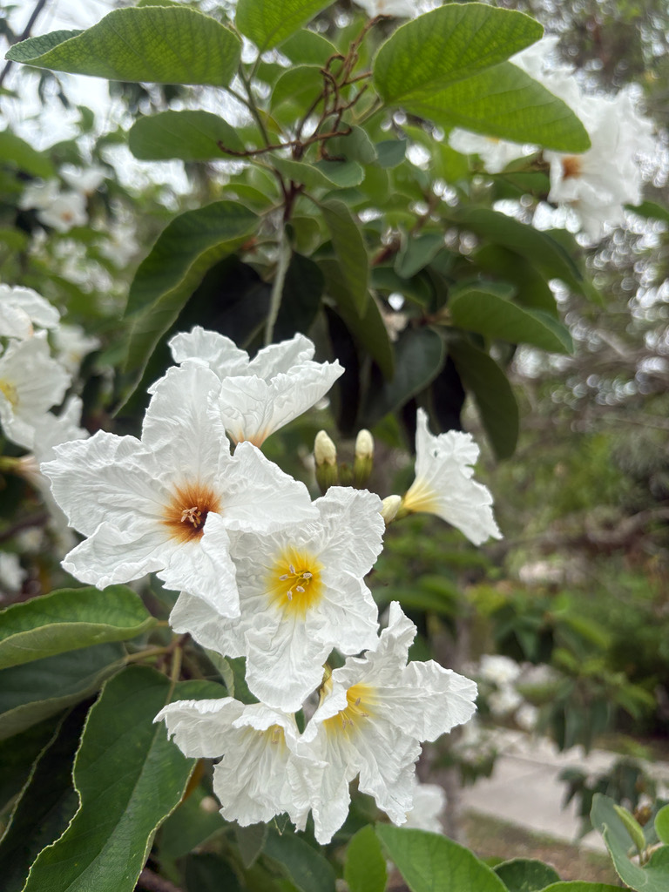

- A remarkably tough ornamental tree that handles intense heat, drought, and poor soils with ease.
- The showy white trumpet flowers have a soft yellow throat and bloom much of the year.
- The small fruits that follow look like olives, giving it the name "Texas olive," though it is not a true olive.
- It is notably cold-hardy for a tropical-looking tree, tolerating more frost than its orange Geiger relative.
Native to southern Texas and northeastern Mexico. Grown as an ornamental flowering tree across the warm South, including Florida, and valued for its toughness and long bloom.
- Texas olive — anacahuita in Mexico, where it is also native — is the white-flowered counterpart to the orange Geiger tree (Cordia sebestena), both in the Boraginaceae (Borage/Forget-me-not) family.
- The family resemblance is immediate: the same broad, stiff, sandpapery leaves, the same trumpet-shaped flowers in showy clusters — only here the blooms are crisp white with a yellow throat. It flowers heavily through much of the warm season.
- The "olive" in Texas olive comes from the small, whitish fruit that visually resembles an olive but is entirely unrelated to true olives (Olea europaea). While wildlife love them, they are not a casual trail snack for humans.
- Its real advantage in the landscape is toughness: it handles heat, drought, and poor soil, and tolerates more cold than the tender orange Geiger, making it a hardier choice for a tropical look.
The nectar-rich white flowers draw bees, butterflies, and hummingbirds over a long bloom season. The fruits are eaten by birds and other wildlife, and the dense canopy offers cover.
A small evergreen tree or large shrub with a rounded, dense crown.
Showy clusters of white trumpet-shaped blooms with yellow throats, much of the year.
Small, whitish, olive-like drupes.
Large, broad, stiff, dark green, with a rough sandpapery texture.
White trumpet flowers with yellow throats on a shrubby tree with rough, sandpapery leaves — like a white-flowered Geiger tree. Run a thumb across a leaf to feel the grit.
The fruit is edible in small amounts and traditionally made into jellies and preserves, but it isn't a casual trail nibble.
Eating a large quantity of raw fruit can cause mild intoxication or a laxative effect. For dogs, heavy ingestion may cause mild stomach upset.


- © Maria Escobar (CC-BY-NC), via iNaturalist
- © Randall Carter (CC-BY-NC), via iNaturalist
- © Rhonda Olschefskie (CC-BY-NC), via iNaturalist